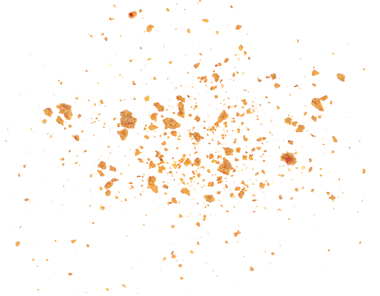

Nestled in the heart of Houston, our story begins with a passion for preserving the authentic flavors of Pakistan’s culinary heritage. Inspired by the bustling streets
and vibrant markets of Pakistan, we embarked on a journey to share the rich tapestry of traditional ice creams with the world.
At Kreamy Scoops, we honor time-honored recipes passed down through generations, carefully crafting each batch with a blend of premium ingredients and age-old techniques. From the creamy decadence of Kulfi to the refreshing zest of Falooda, every spoonful is a symphony of flavors that pays homage to our roots. And to ensure the highest quality, we proudly use organic milk to produce our ice cream, embracing a commitment to both taste and sustainability.
Scoops At Kreamy Scoops, we honor time-honored recipes passed down through generations, carefully crafting each batch with a blend of premium ingredients and age-old techniques. From the creamy decadence of Kulfi to the refreshing zest of Falooda, every spoonful is a symphony of flavors that pays homage to our roots. And to ensure the highest quality, we proudly use organic milk to produce our ice cream, embracing a commitment to both taste and sustainability.But our commitment to excellence doesn’t stop at taste alone. We believe in creating experiences that transcend the ordinary, where every visit leaves you with memories to savor. Whether you’re indulging in a classic favorite or daring to explore new flavors, our friendly team is here to guide you on a culinary adventure like no other.
join us at Kreamy Scoops and embark on a journey through the flavors of Pakistan. Because here, every scoop is a celebration of tradition, culture, and the simple joy of good company.
Our weekly working hours are designed to cater to your convenience and needs.Check our schedule and connect with us during our working hours for a seamless experience.
2 pm – 10 pm
Closed
12 pm – 11 pm
12 pm – 10 pm